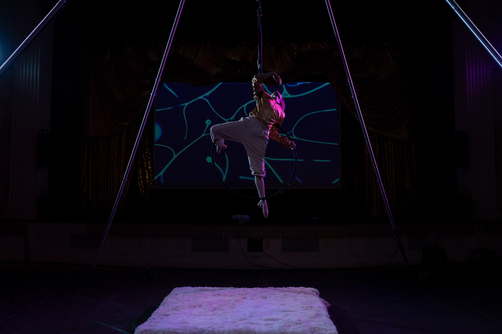
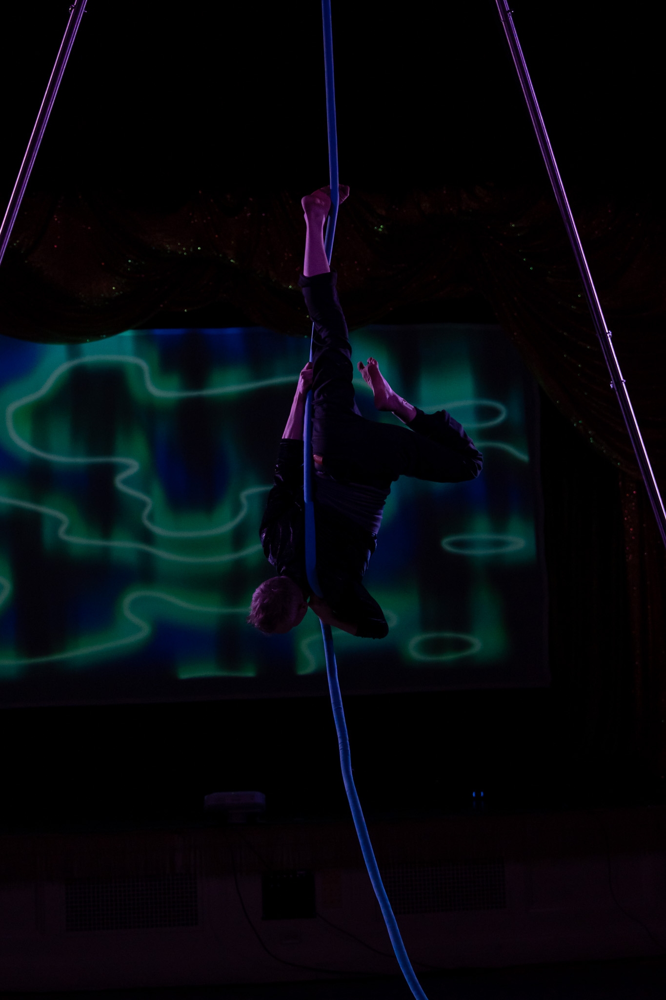
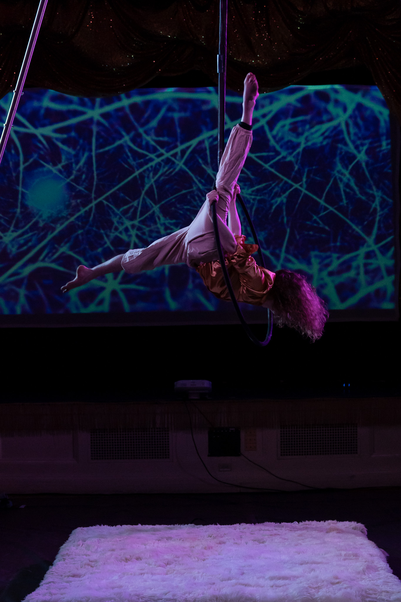
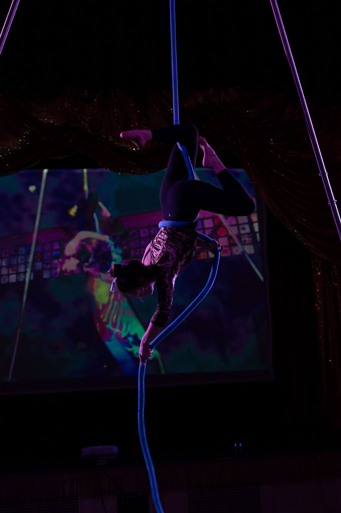

RESPONSIBILITIES
concept, music, electronic hardware design, graphic design
No AI was used in the making of this project.
Lunarcy was a multidisciplinary interactive aerialist show designed for Burlington's NYE Highlight 2025 festival, featuring a custom-built sensor system for dancers.
For each piece, an aerialist wears this sensor on their leg. The Arduino ESP32 then sends real-time movement data over Wifi to a laptop running Touchdesigner, which creates the animated visuals. Each scene has a different mapping, so the dancers movement controlled a different visual parameter.



Original music was composed by myself and Nate Hicks.